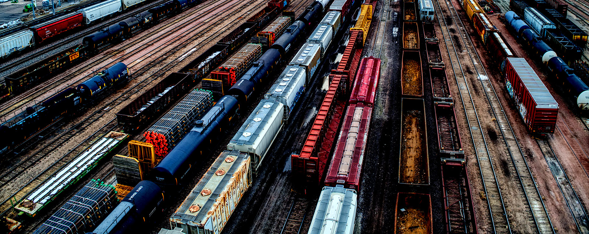

Derail the Sale! Norfolking Way!
Cincinnati, OH is the only city in the United States that owns its rail lines, making the 'Cincinnati Southern Rail' municipal infrastructure. In November of 2023, Cincinnati voters will be faced with a ballot initiative to sell our rail lines to Norfolk Southern. Norfolk Southern currently leases Cincinnati's rails, but does not own them.
City council says the $1.6 billion sale will be good for the city, by creating a fund for the maintenance and development of other city infrastructure. The sale of this important infrastructure to a corporation that is currently facing countless class action lawsuits for environmental and material damages, and misrepresentation of conduct resulting in losses to the company's investors would be an enormous liability for Cincinnati's residents.
Maintaining the ownership of Cincinnati's rail lines by the city provides legal protection and recourse in the case of future environmental disasters caused by Norfolk Southern.
Cincinnati owning its own rail lines now and in the future would maintain a reliable source of revenue for the city, especially as the state of Ohio invests in passenger rail. Our city council members want to invest in passenger rail, so why sell our existing lines?
The Department of Natural Resources estimates that the Norfolk Southern trail derailment disaster in East Palestine in Feb. 2023 resulted in the death of 43,000 animals. Residents are filing a class action lawsuit due to prolonged illness, property damage, and losses resulting from the derailment and burning of tonnes of 'forever chemicals'.
